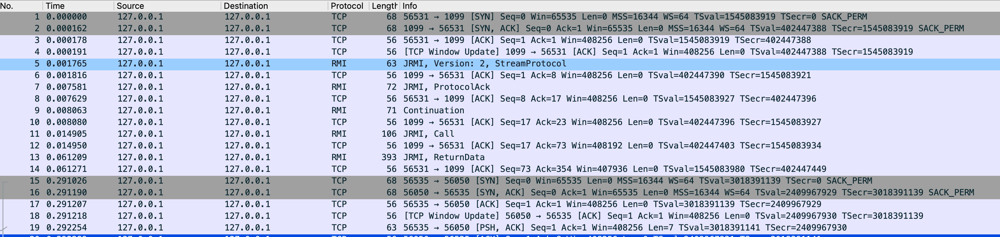
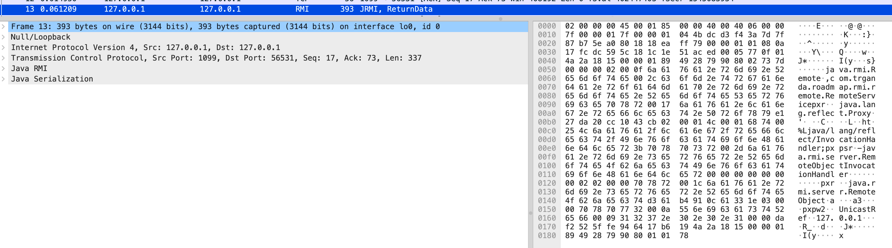
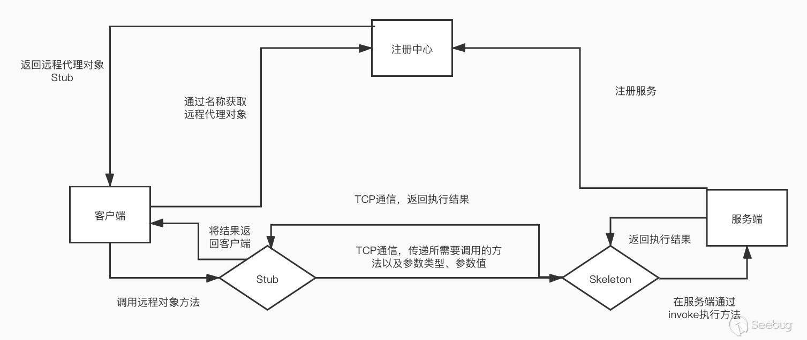
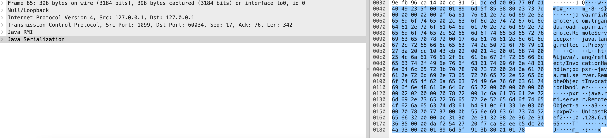
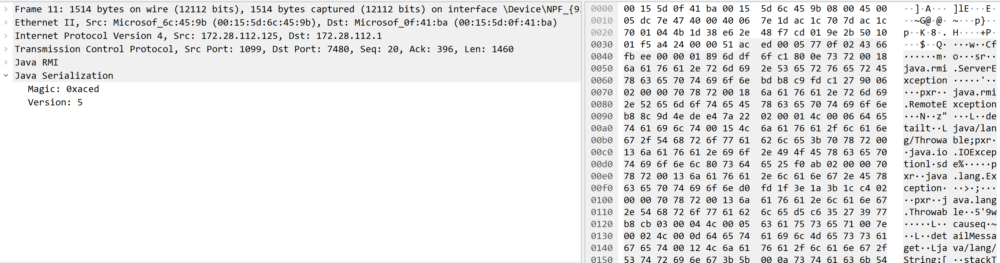
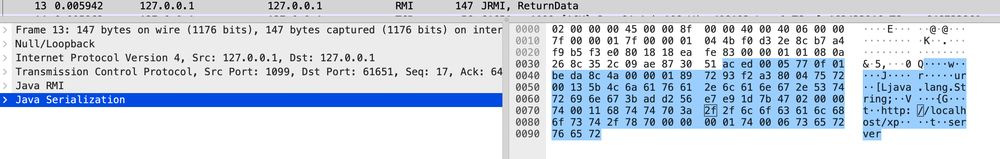
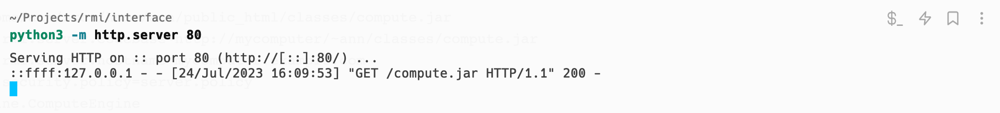
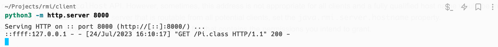
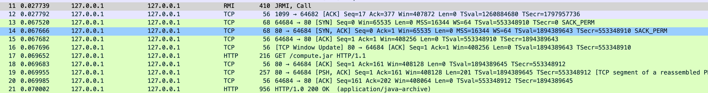
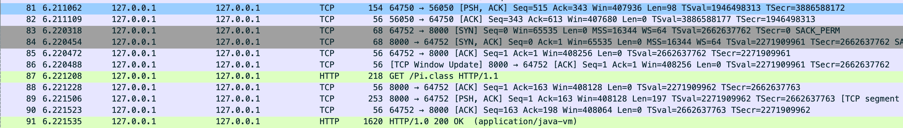

在分布式应用场景中，会经常使用到一个概念，叫 RPC（远程方法调用协议）。它的目的是让一台机器可以向另一台机器发出请求，协助计算一个任务并返回计算结果。RMI 是 Java 语言中，一种实现 RPC 的方式，完全由 Java 语言编写，在 TCP 之上使用 Java Remote Method Protocol(JRMP) 协议进行传输。由于采用的是自己设计的协议，它的缺点是只支持 Java 语言。 后续为了能够让其它语言也能与 RMI 对象进行交互，Java 开始支持 CORBA 架构下的 IIOP 协议，并由此引出了名为 RMI-IIOP 的概念。这里只是顺带一提，不细究。 RMI 和其他的 RPC 实现方式都是类似的，主要由 3 个部分组成。
Client（客户端）Registry（注册中心）Server（服务端）
RMI 的调用过程会借助名为 Stub 和 Skel 的结构，它们可以看作是 Client 与 Server 沟通的代理。 RPC 的实现方式一般为，服务端向注册中心注册自己开放的计算服务，可以简单的理解为一个方法或函数。客户端在需要使用时，先访问注册中心，查找是否有自己需要的计算服务，成功获取需要的信息（如 Server 的 IP 和 Port）后再去访问 Server。 下面先看 Java 中 RMI 的代码示例，Java 中的 RMI 是以接口的形式来提供远程调用服务的。
快速开始
下面通过示例代码演示 RMI 的调用过程。
服务端代码
服务端代码：
public interface RemoteService extends java.rmi.Remote {
public void doSome(String msg) throws RemoteException;
}
public class RemoteServiceImpl extends UnicastRemoteObject
implements RemoteService {
public RemoteServiceImpl(int port) throws RemoteException {
super(port);
}
@Override
public void doSome(String msg) throws RemoteException {
System.out.println(msg);
}
}
public class OrdinaryRMIServer {
public static void main(String[] args) {
try {
int registryPort = Integer.parseInt(args[0]);
int serverPort = Integer.parseInt(args[1]);
String serverName = args[2];
System.out.println(registryPort + " " + serverPort + " " + serverName);
// explicitly set the port of server
RemoteServiceImpl rsi = new RemoteServiceImpl(serverPort);
// refer:
// https://docs.oracle.com/javase/8/docs/api/java/rmi/registry/LocateRegistry.html
// default listening port: 0.0.0.0:1099
Registry reg = LocateRegistry.createRegistry(registryPort);
// If the obj has no extends the UnicastRemoteObject, call exportObject
// to return a stub
// if (!(obj instanceof UnicastRemoteObject)) {
// obj = UnicastRemoteObject.exportObject((Remote) obj, serverPort);
// }
reg.bind(serverName, rsi);
} catch (Exception ex) {
ex.printStackTrace();
}
}
}服务端分为 3 个部分：
- 一个继承了
java.rmi.Remote的接口，如这里的RemoteService，其中定义了方法doSome() - 一个实现了此接口的类，如这里的
RemoteServiceImpl，并且需要继承UnicastRemoteObject才能被绑定 - 一个主类
OrdinaryRMIServer，将RemoteServiceImpl实例化之后，绑定至Registry，也就是注册中心。
指定端口
对于 RemoteServiceImpl 对象，显式指定了它的端口为 56050，这么做的目的是为了便于抓包。如果不指定则会随机分配一个端口号，上面采用的方式是调用父类 UnicastRemoteObject 的构造方法。
另一种方式是通过 UnicastRemoteObject.exportObject(Remote obj, int port) 来指定导出对象的端口号。
public class RemoteServiceImplNoRemote implements RemoteService {
@Override
public void doSome(String msg) throws RemoteException {
System.out.println("[" + msg + "]");
}
}
public class OrdinaryRMIServerExport {
public static void main(String[] args) {
try {
int registryPort = Integer.parseInt(args[0]);
int serverPort = Integer.parseInt(args[1]);
String serverName = args[2];
System.out.println(registryPort + " " + serverPort + " " + serverName);
// // RemoteServiceImplNoRemote has no extend the UnicastRemoteObject
RemoteServiceImplNoRemote rsi = new RemoteServiceImplNoRemote();
// refer:
// https://docs.oracle.com/javase/8/docs/api/java/rmi/registry/LocateRegistry.html
// default listening port: 0.0.0.0:1099
Registry reg = LocateRegistry.createRegistry(registryPort);
// If the obj has no extends the UnicastRemoteObject, call exportObject
// to return a stub
rsi =
(RemoteServiceImplNoRemote)
UnicastRemoteObject.exportObject((Remote) rsi, serverPort);
reg.bind(serverName, rsi);
} catch (Exception ex) {
ex.printStackTrace();
}
}
}客户端代码
客户端代码：
public class OrdinaryRMIClient {
public static void main(String[] args) {
try {
String addr = (args[0]);
int port = Integer.parseInt(args[1]);
String name = args[2];
String params = args[3];
System.out.println(addr + " " + port + " " + name + " " + params);
// default host: localhost; port: 1099
Registry registry = LocateRegistry.getRegistry(addr, port);
RemoteService rs = (RemoteService) registry.lookup(name);
rs.doSome(params);
} catch (Exception ex) {
ex.printStackTrace();
}
}
}客户端的代码包含两部分，首先它需要知道服务端开放的接口，才能知道有哪些方法可以被调用，所以这里也需要 RemoteService。
剩下的逻辑就是访问注册中心，通过 lookup 方法，查找服务端绑定的服务名，获取 RemoteService 对象，再调用 doSome() 方法。
流量分析
通过 Wireshark 抓包，内容如下：

可以看到其中有两个 TCP 连接，分别是
56531→1099：客户端至注册中心56531→56050：客户端至服务端
前面的内容中有提到过 RMI 的通信流程，客户端需要先访问注册中心，获取服务端的信息再去访问服务端。注册中心返回的信息，就位于第 13 个数据包中，
并且可以看到 Wireshark 识别出了数据包的内容为 Java 序列化之后的内容，那么端口 56050 是如何获得的呢？在数据中可以看到 192.168.91.1，在其之后跟着 00 00 DA F2，解码之后就是 56050 了。

从这里就已经可以知道 RMI 的调用过程中使用了序列化的方式来传递数据。
前面提过 RMI 的调用过程中有 3 部分：
Client（客户端）Registry（注册中心）Server（服务端）
但代码中，只有两个主类，为什么？这一点还需要感谢 JDK 的封装，首先在早期，大概 JDK 6 推出的时候，Registry 是作为一个单独的可执行文件来提供的，它就是 rmiregistry，如果要启动 Registry 需要执行该文件，流程比较麻烦。
现在可以在代码层面创建 Registry，并通过 bind() 方法绑定对象。
Registry reg = LocateRegistry.createRegistry(1099);
reg.bind(name, (Remote) obj);第一行，创建并启动 Registry，
第二行，将 Remote 对象于名称 name 进行绑定。bind() 方法的第一个参数可以是一个 URL，如 rmi://host:port/name。其中 host 和 port 就是 Registry 的主机名和端口，分别默认为 localhost 和 1099。
前面的代码中，省略了 host 和 port，直接指定了 name。
通信过程
了解了基础的 RMI 知识，下面来看 RMI 的通信过程，下图对通信过程进行了梳理。
 在 TCP 之上，RMI 借助 JRMP 协议进行沟通，工作过程如下
RemoteService接口的实现RemoteServiceImpl先继承UnicastRemoteObject类RemoteServiceImpl对外暴露，等待外部RMI的访问- 暴露后会监听指定端口
- 将自身注册至
Registry - 一个
Client从Registry获取RemoteServiceImpl的访问信息 Client使用获取的信息，访问RemoteServiceImpl
- 当
Client向RemoteServiceImpl发起远程调用请求后，它会创建一个TCPConnection对象，并与RemoteServiceImpl的指定端口连接。发送RMI header以及通过StreamRemoteCall发送序列化后的调用参数 RemoteServiceImplServer通过新的线程来处理与Client的连接，并继续等待其它连接。- 读取
RMI header信息并创建RemoteCall对象来处理传递过来的参数，并进行反序列化 Transport的serviceCall()会根据请求内容的不同，进行分发dispatch()会调用合适的方法来处理对应的请求内容，并进行响应- 如果方法调用过程种出现异常，会将其序列化后传递给
Client
Client- 从
Server获取返回内容后，会进行反序列化
- 从
不同主机上运行
前面的示例代码是都是在本地主机上运行的，实际场景中都是拆分的。
服务端代码不变，在地址为 198.19.249.3 的机器上运行
java OrdinaryRMIServer 1099 56050 server启动客户端
java OrdinaryRMIClient 127.0.0.1 1099 server hi但是可能会发生如下异常
java.rmi.ConnectException: Connection refused to host: 127.0.0.1; nested exception is:
java.net.ConnectException: Connection refused (Connection refused)
at sun.rmi.transport.tcp.TCPEndpoint.newSocket(TCPEndpoint.java:623)
at sun.rmi.transport.tcp.TCPChannel.createConnection(TCPChannel.java:216)
at sun.rmi.transport.tcp.TCPChannel.newConnection(TCPChannel.java:202)
at sun.rmi.server.UnicastRef.newCall(UnicastRef.java:343)
at sun.rmi.registry.RegistryImpl_Stub.lookup(RegistryImpl_Stub.java:116)
at OrdinaryRMIClient.callRemote(OrdinaryRMIClient.java:11)
at OrdinaryRMIClient.main(OrdinaryRMIClient.java:20)
Caused by: java.net.ConnectException: Connection refused (Connection refused)
at java.net.PlainSocketImpl.socketConnect(Native Method)
at java.net.AbstractPlainSocketImpl.doConnect(AbstractPlainSocketImpl.java:350)
at java.net.AbstractPlainSocketImpl.connectToAddress(AbstractPlainSocketImpl.java:206)
at java.net.AbstractPlainSocketImpl.connect(AbstractPlainSocketImpl.java:188)
at java.net.SocksSocketImpl.connect(SocksSocketImpl.java:392)
at java.net.Socket.connect(Socket.java:607)
at java.net.Socket.connect(Socket.java:556)
at java.net.Socket.<init>(Socket.java:452)
at java.net.Socket.<init>(Socket.java:229)
at sun.rmi.transport.proxy.RMIDirectSocketFactory.createSocket(RMIDirectSocketFactory.java:40)
at sun.rmi.transport.proxy.RMIMasterSocketFactory.createSocket(RMIMasterSocketFactory.java:148)
at sun.rmi.transport.tcp.TCPEndpoint.newSocket(TCPEndpoint.java:617)
... 6 more
这个异常产生的原因是因为 Server 默认绑定的地址与 Registry 中存储的内容不同，Registry 默认绑定在了 0.0.0.0，而 Server 默认也绑定在了 0.0.0.0，但是 Registry 中存储的内容不对，告知 Client Server 位于 127.0.0.1。导致 Client 从 Registry 获取的 Server 信息后访问了本机地址。
关于这部分，官方 FAQ 中有相关解释：
https://docs.oracle.com/javase/8/docs/technotes/guides/rmi/faq.html
A.1 Why do I get an exception for an unexpected hostname and/or port number when I call Naming.lookup?
解决方法是启动 Server 时，通过 -Djava.rmi.server.hostname=198.19.249.3 参数手动指定绑定的地址
java -Djava.rmi.server.hostname=198.19.249.3 OrdinaryRMIServer代码分析
从源码角度看看为什么会发生前述情况，以及 java.rmi.server.hostname 是如何生效的。
先看 RemoteServiceImpl 的创建过程，启动时指定参数 -Djava.rmi.server.hostname=198.19.249.3
在 Registry reg = LocateRegistry.createRegistry(1099); 和 RemoteServiceImpl rsi = new RemoteServiceImpl(56050); 打下断点并运行，
在 RegistryImpl.<init> 中会构造 LiveRef 对象
public LiveRef(ObjID objID, int port) {
this(objID, TCPEndpoint.getLocalEndpoint(port), true);
}LiveRef 的构造方法中调用 TCPEndpoint.getLocalEndpoint(port) 获取的地址和端口是 198.19.249.3:1099。
跟入 TCPEndpoint 的初始代码块，可以看到会检查 java.rmi.server.hostname 属性的内容，如果为空则返回 127.0.0.1。
/**
* Returns the value of the java.rmi.server.hostname property.
*/
private static String getHostnameProperty() {
return AccessController.doPrivileged(
new GetPropertyAction("java.rmi.server.hostname"));
}
/**
* Find host name of local machine. Property "java.rmi.server.hostname"
* is used if set, so server administrator can compensate for the possible
* inablility to get fully qualified host name from VM.
*/
static {
localHostKnown = true;
localHost = getHostnameProperty();
if (localHost == null) {
try {
InetAddress localAddr = InetAddress.getLocalHost();调用栈如下：
getHostnameProperty:98, TCPEndpoint (sun.rmi.transport.tcp)
<clinit>:109, TCPEndpoint (sun.rmi.transport.tcp)
<init>:93, LiveRef (sun.rmi.transport)
<init>:74, LiveRef (sun.rmi.transport)
<init>:168, UnicastServerRef (sun.rmi.server)
exportObject:320, UnicastRemoteObject (java.rmi.server)
<init>:198, UnicastRemoteObject (java.rmi.server)
<init>:15, RemoteServiceImpl (com.trganda.roadmap.rmi.impl)
main:29, OrdinaryRMIServer (com.trganda.roadmap.rmi.server)继续跟入代码至 TCPTransport#listen，[1] 中创建的套接字监听地址和端口为 0.0.0.0:1099，也就是说 Server 的监听地址和 java.rmi.server.hostname 属性无关。
private void listen() throws RemoteException {
assert Thread.holdsLock(this);
TCPEndpoint ep = getEndpoint();
int port = ep.getPort();
if (server == null) {
if (tcpLog.isLoggable(Log.BRIEF)) {
tcpLog.log(Log.BRIEF,
"(port " + port + ") create server socket");
}
try {
server = ep.newServerSocket(); // [1]调用栈如下：
listen:341, TCPTransport (sun.rmi.transport.tcp)
exportObject:254, TCPTransport (sun.rmi.transport.tcp)
exportObject:412, TCPEndpoint (sun.rmi.transport.tcp)
exportObject:147, LiveRef (sun.rmi.transport)
exportObject:237, UnicastServerRef (sun.rmi.server)
exportObject:383, UnicastRemoteObject (java.rmi.server)
exportObject:320, UnicastRemoteObject (java.rmi.server)
<init>:198, UnicastRemoteObject (java.rmi.server)
<init>:15, RemoteServiceImpl (com.trganda.roadmap.rmi.impl)
main:29, OrdinaryRMIServer (com.trganda.roadmap.rmi.server)接着看 Registry 的构造过程，也是类似的，最终会走到 TCPTransport#listen，创建的套接字监听地址和端口为 0.0.0.0:1099，也就是说 Registry 监听地址实际为 0.0.0.0 与 java.rmi.server.hostname 也无关。
调用栈如下：
listen:341, TCPTransport (sun.rmi.transport.tcp)
exportObject:254, TCPTransport (sun.rmi.transport.tcp)
exportObject:412, TCPEndpoint (sun.rmi.transport.tcp)
exportObject:147, LiveRef (sun.rmi.transport)
exportObject:237, UnicastServerRef (sun.rmi.server)
setup:213, RegistryImpl (sun.rmi.registry)
<init>:198, RegistryImpl (sun.rmi.registry)
createRegistry:203, LocateRegistry (java.rmi.registry)
startListener:16, OrdinaryRMIServer (com.trganda.roadmap.rmi.server)
main:30, OrdinaryRMIServer (com.trganda.roadmap.rmi.server)
深入 RegistryImpl#bind
接着查看 RegistryImpl#bind，
public void bind(String name, Remote obj)
throws RemoteException, AlreadyBoundException, AccessException
{
// The access check preventing remote access is done in the skeleton
// and is not applicable to local access.
synchronized (bindings) {
Remote curr = bindings.get(name);
if (curr != null)
throw new AlreadyBoundException(name);
bindings.put(name, obj); // [2]
}
}它的实现很简单，把要绑定的对象存储在成员 bindings 中，而 Remote 对象中存储的就是 Server 的地址和端口。
private Hashtable<String, Remote> bindings
= new Hashtable<>(101);所以最后的结论就是
Registry和Server的监听地址默认都是0.0.0.0，与前面构造LiveRef时获取的地址无关。java.rmi.server.hostname影响的是LiveRef对象，而它才是存储在Registry中的内容，它实际获取的地址是127.0.0.1，所以才导致Client从Registry获取到不恰当的信息 。
如何绑定任意地址
前面的示例代码，展示了如何指定 Server 绑定的端口，如果想绑定至默认地址 0.0.0.0 以外的地址也是可以做到的
TCPEndpoint#newServerSocket 中，[3] 是通过一个 RMIServerSocketFactory 对象创建 Socket 的，
ServerSocket newServerSocket() throws IOException {
if (TCPTransport.tcpLog.isLoggable(Log.VERBOSE)) {
TCPTransport.tcpLog.log(Log.VERBOSE,
"creating server socket on " + this);
}
RMIServerSocketFactory serverFactory = ssf; // [3]
if (serverFactory == null) {
serverFactory = chooseFactory();
}
ServerSocket server = serverFactory.createServerSocket(listenPort);而这个 ssf 可在 UnicastRemoteObject 的构造方法中中指定。
protected UnicastRemoteObject(int port,
RMIClientSocketFactory csf,
RMIServerSocketFactory ssf)
throws RemoteException
{
this.port = port;
this.csf = csf;
this.ssf = ssf;
exportObject((Remote) this, port, csf, ssf);
}实现一个自定义 RMIServerSocketFactory
public class ServerSocketFactoryImpl implements RMIServerSocketFactory {
private final InetAddress bindAddr;
public ServerSocketFactoryImpl(InetAddress bindAddr) {
this.bindAddr = bindAddr;
}
@Override
public ServerSocket createServerSocket(int port) throws IOException {
return new ServerSocket(port, 0, bindAddr);
}
/*
* https://docs.oracle.com/javase/8/docs/api/java/lang/Object.html
*
* An implementation of this interface should implement Object.equals(java.lang.Object)
* to return true when passed an instance that represents the same
* (functionally equivalent) server socket factory, and false otherwise
* (and it should also implement Object.hashCode() consistently with
* its Object.equals implementation).
*/
@Override
public boolean equals ( Object obj )
{
return obj != null && this.getClass() == obj.getClass() && this.bindAddr.equals( ((ServerSocketFactoryImpl)obj).bindAddr );
}
}在创建 Server 时，传入 ServerSocketFactoryImpl 对象
public class OrdinaryRMIServerWithAddress {
public static void main(String[] args) {
try {
int registryPort = Integer.parseInt(args[0]);
String registryIP = args[1];
int serverPort = Integer.parseInt(args[2]);
String serverIP = args[3];
String serverName = args[4];
System.out.println(registryPort + " " + serverPort + " " + serverIP + " " + serverName);
// explicitly set the port and address of server
RemoteServiceImpl rsi =
new RemoteServiceImpl(
serverPort,
null,
new ServerSocketFactoryImpl(InetAddress.getByName(serverIP)));
Registry reg =
LocateRegistry.createRegistry(
registryPort,
null,
new ServerSocketFactoryImpl(InetAddress.getByName(registryIP)));
reg.bind(serverName, rsi);
} catch (Exception ex) {
ex.printStackTrace();
}
}
}运行 OrdinaryRMIServerWithAddress
java OrdinaryRMIServerWithAddress 1099 127.0.0.1 56050 127.0.0.1 server验证一下
$ netstat -na | grep 56050
tcp4 0 0 127.0.0.1.56050 *.* LISTEN另一种方式，前面提到过，使用 UnicastRemoteObject#exportObject() 方法，这里不展示代码了。
拆分 Registry 和 Server
RPC 的场景里，注册中心和服务提供者可能是分开的。前面的示例将两者绑定在一起，下面将它们独立出来
注册中心 OrdinaryRegistry
public class OrdinaryRegistry {
public static void main(String[] args) {
try {
int port = Integer.parseInt(args[0]);
String addr = args[1];
// create a registry and listening
Registry reg =
LocateRegistry.createRegistry(
port, null, new ServerSocketFactoryImpl(InetAddress.getByName(addr)));
// prevent stop current thread.
System.in.read();
} catch (Exception e) {
e.printStackTrace();
}
}
}服务端 RemoteServer
public class RemoteServer {
public static void main(String[] args) {
try {
int registryPort = Integer.parseInt(args[0]);
String registryIP = args[1];
int serverPort = Integer.parseInt(args[2]);
String serverIP = args[3];
String name = args[4];
RemoteServiceImpl rsi =
new RemoteServiceImpl(
serverPort,
null,
new ServerSocketFactoryImpl(InetAddress.getByName(serverIP)));
Registry reg = LocateRegistry.getRegistry(registryIP, registryPort);
reg.rebind(name, rsi);
System.out.println("rebind");
} catch (Exception e) {
e.printStackTrace();
}
}
}运行注册中心
java OrdinaryRegistry 1099 127.0.0.1运行服务端
java RemoteServer 1099 127.0.0.1 56050 127.0.0.1 server接着运行客户端 OrdinaryRMIClient
java OrdinaryRMIClient 127.0.0.1 1099 server hi连接失败
但是却出现了和前面类似的异常信息，与服务端建立连接失败，
java.rmi.ConnectIOException: error during JRMP connection establishment; nested exception is:
java.net.SocketException: Connection reset
at sun.rmi.transport.tcp.TCPChannel.createConnection(TCPChannel.java:307)
at sun.rmi.transport.tcp.TCPChannel.newConnection(TCPChannel.java:202)
at sun.rmi.server.UnicastRef.invoke(UnicastRef.java:132)
at java.rmi.server.RemoteObjectInvocationHandler.invokeRemoteMethod(RemoteObjectInvocationHandler.java:235)
at java.rmi.server.RemoteObjectInvocationHandler.invoke(RemoteObjectInvocationHandler.java:180)
at com.sun.proxy.$Proxy0.doSome(Unknown Source)
at com.trganda.roadmap.rmi.client.OrdinaryRMIClient.main(OrdinaryRMIClient.java:23)
Caused by: java.net.SocketException: Connection reset
at java.net.SocketInputStream.read(SocketInputStream.java:210)
at java.net.SocketInputStream.read(SocketInputStream.java:141)
at java.io.BufferedInputStream.fill(BufferedInputStream.java:246)
at java.io.BufferedInputStream.read(BufferedInputStream.java:265)
at java.io.DataInputStream.readByte(DataInputStream.java:265)
at sun.rmi.transport.tcp.TCPChannel.createConnection(TCPChannel.java:246)
... 6 more
通过抓包，可以看到注册中心返回的地址是 10.128.6.165

根据前面的解决方式，应该指定手动 -Djava.rmi.server.hostname=127.0.0.1，那么请问应该给 OrdinaryRegistry 还是 RemoteServer 指定？
答案是 RemoteServer。
在前面的代码分析中已经透露出一件事情，那就是 java.rmi.server.hostname 是在 RemoteServiceImpl 的创建过程中检查并发挥作用的，所以应该在 RemoteServer 中设置。
java -Djava.rmi.server.hostname=127.0.0.1 RemoteServer 1099 127.0.0.1 56050 127.0.0.1 server绑定失败
前述运行方式，注册中心和服务端都绑定在同一地址，尝试在不同主机运行。
主机 10.211.55.3 运行注册中心
java OrdinaryRegistry 1099 10.211.55.3主机 10.211.55.2 运行服务端
java -Djava.rmi.server.hostname=10.211.55.2 RemoteServer 1099 10.211.55.3 56050 10.211.55.2 server出现如下异常，
java.rmi.ServerException: RemoteException occurred in server thread; nested exception is:
java.rmi.AccessException: Registry.rebind disallowed; origin /10.211.55.2 is non-local host
at sun.rmi.server.UnicastServerRef.dispatch(UnicastServerRef.java:389)
at sun.rmi.transport.Transport$1.run(Transport.java:200)
at sun.rmi.transport.Transport$1.run(Transport.java:197)
at java.security.AccessController.doPrivileged(Native Method)
at sun.rmi.transport.Transport.serviceCall(Transport.java:196)
at sun.rmi.transport.tcp.TCPTransport.handleMessages(TCPTransport.java:573)
at sun.rmi.transport.tcp.TCPTransport$ConnectionHandler.run0(TCPTransport.java:834)
at sun.rmi.transport.tcp.TCPTransport$ConnectionHandler.lambda$run$0(TCPTransport.java:688)
at java.security.AccessController.doPrivileged(Native Method)
at sun.rmi.transport.tcp.TCPTransport$ConnectionHandler.run(TCPTransport.java:687)
at java.util.concurrent.ThreadPoolExecutor.runWorker(ThreadPoolExecutor.java:1149)
at java.util.concurrent.ThreadPoolExecutor$Worker.run(ThreadPoolExecutor.java:624)
at java.lang.Thread.run(Thread.java:750)
at sun.rmi.transport.StreamRemoteCall.exceptionReceivedFromServer(StreamRemoteCall.java:303)
at sun.rmi.transport.StreamRemoteCall.executeCall(StreamRemoteCall.java:279)
at sun.rmi.server.UnicastRef.invoke(UnicastRef.java:380)
at sun.rmi.registry.RegistryImpl_Stub.rebind(RegistryImpl_Stub.java:158)
at com.trganda.roadmap.rmi.server.RemoteServer.main(RemoteServer.java:27)
Caused by: java.rmi.AccessException: Registry.rebind disallowed; origin /10.211.55.2 is non-local host
at sun.rmi.registry.RegistryImpl.checkAccess(RegistryImpl.java:350)
at sun.rmi.registry.RegistryImpl_Skel.dispatch(RegistryImpl_Skel.java:146)
at sun.rmi.server.UnicastServerRef.oldDispatch(UnicastServerRef.java:469)
at sun.rmi.server.UnicastServerRef.dispatch(UnicastServerRef.java:301)
at sun.rmi.transport.Transport$1.run(Transport.java:200)
at sun.rmi.transport.Transport$1.run(Transport.java:197)
at java.security.AccessController.doPrivileged(Native Method)
at sun.rmi.transport.Transport.serviceCall(Transport.java:196)
at sun.rmi.transport.tcp.TCPTransport.handleMessages(TCPTransport.java:573)
at sun.rmi.transport.tcp.TCPTransport$ConnectionHandler.run0(TCPTransport.java:834)
at sun.rmi.transport.tcp.TCPTransport$ConnectionHandler.lambda$run$0(TCPTransport.java:688)
at java.security.AccessController.doPrivileged(Native Method)
at sun.rmi.transport.tcp.TCPTransport$ConnectionHandler.run(TCPTransport.java:687)
at java.util.concurrent.ThreadPoolExecutor.runWorker(ThreadPoolExecutor.java:1149)
at java.util.concurrent.ThreadPoolExecutor$Worker.run(ThreadPoolExecutor.java:624)
at java.lang.Thread.run(Thread.java:750)从调用栈中看到 java.security.AccessController.doPrivileged 未通过，访问受限了，并且给出了提示信息 origin /172.28.112.1 is non-local host。
代码分析
在 RemoteServer 的 reg.rebind(name, rsi); 打下断点，注意这里获取到的 reg 类型是 RegistryImpl_Stub，涉及到 Socket 通信。
从异常信息中注意到 sun.rmi.registry.RegistryImpl.checkAccess，
/**
* Check that the caller has access to perform indicated operation.
* The client must be on same the same host as this server.
*/
public static void checkAccess(String op) throws AccessException {注释中清楚的写道，对于某些操作，访问者必须于注册中心具有相同的地址。具体被限制的操作见 RegistryImpl 注释可知为 bind，rebind 和 unbind。
The default RegistryImpl exported restricts access to clients on the local host for the methods bind, rebind, unbind by checking the client host in the skeleton.
这种限制没有搜到官方绕过方案，这意味着注册中心和服务端必须处于同一台机器，或者说绑定至同一网卡。
而在主机 198.19.249.16 没有看到注册中心打印任何异常，抓包看到异常信息是通过 JRMI 的 ReturnData 返回的。

RMI 工具链 Rmiregistry
rmiregistry 是 JDK 自带的控制台工具，用于创建注册中心，可指定端口号，无法指定 IP。
rmiregistry 1099查看监听状态
% netstat -atn | grep 1099
tcp46 0 0 *.1099 *.* LISTEN
ClassNotFoundException
测试是否可用
java -Djava.rmi.server.hostname=127.0.0.1 RemoteServer 1099 127.0.0.1 56050 127.0.0.1 server发生错误，找不到 RemoteService。
Caused by: java.lang.ClassNotFoundException: com.trganda.roadmap.rmi.remote.RemoteService
通过抓包可以知道这个错误是 rmiregistry 反馈的，因为 rmiregistry 无法在它的 CLASSPATH 下找到 RemoteService 接口。解决方法是在 RemoteService 所在目录执行 rmiregistry。
那么 rmiregistry 可以通过 codebase 来获取 RemoteService 吗？来验证看看
在 RemoteService 所在目录启动 HTTP 服务
python3 -m http.server 80
Serving HTTP on :: port 80 (http://[::]:80/) ...启动 rmiregistry 并指定 java.rmi.server.codebase
rmiregistry -J-Djava.rmi.server.codebase="http://localhost/"测试
java -Djava.rmi.server.hostname=127.0.0.1 RemoteServer 1099 127.0.0.1 56050 127.0.0.1 server没有发生异常，HTTP 服务器收到请求
::ffff:127.0.0.1 - - [20/Jul/2023 16:52:19] "GET /com/trganda/roadmap/rmi/remote/RemoteService.class HTTP/1.1" 200 -执行客户端
java OrdinaryRMIClient 127.0.0.1 1099 server hiRemoteServer 打印输出
[hi]结论很明显，可以。
Dump Registry
Registry 的 lookup、bind、rebind 和 unbind 都提到过，除了 lookup 默认都有访问限制，但是还有另外一个方法 list。
可以通过 list 方法查看注册中心绑定的服务名称列表，
public class OrdinaryRMIList {
public static void main(String[] args) {
try {
int registryPort = Integer.parseInt(args[0]);
String registryIP = args[1];
System.out.println(registryPort + " " + registryIP);
Registry reg = LocateRegistry.getRegistry(registryIP, registryPort);
String[] list = reg.list();
for (String s : list) {
System.out.println(s);
}
} catch (Exception e) {
e.printStackTrace();
}
}
}执行
% java OrdinaryRMIList 1099 127.0.0.1
server但只是返回了名称而已，有没有办法获取更多信息？抓包看看，响应中确实只包含了名称 server。
其中看到了
-Djava.rmi.server.codebase="http://localhost/"的身影，这里先忽略。

那尝试在获取名称之后，使用 lookup 方法呢？
public class OrdinaryRMIDumper {
public static void main(String[] args) {
try {
int port = Integer.parseInt(args[0]);
String addr = (args[1]);
String name = args[2];
System.out.println(addr + " " + port + " " + name);
// default host: localhost; port: 1099
Registry registry = LocateRegistry.getRegistry(addr, port);
Remote stub = registry.lookup(name);
} catch (Exception ex) {
ex.printStackTrace();
}
}
}其实前面已经抓过 lookup 时的数据包了，这里再抓一次，仔细看看
java OrdinaryRMIDumper 1099 127.0.0.1 server对 ReturnData 进行反序列化
java -jar SerializationDumper-v1.13.jar aced0005770f01beda8c4a000001897293f2a38005737d00000002000f6a6176612e726d692e52656d6f7465002c636f6d2e747267616e64612e726f61646d61702e726d692e72656d6f74652e52656d6f746553657276696365740011687474703a2f2f6c6f63616c686f73742f787200176a6176612e6c616e672e7265666c6563742e50726f7879e127da20cc1043cb0200014c0001687400254c6a6176612f6c616e672f7265666c6563742f496e766f636174696f6e48616e646c65723b740011687474703a2f2f6c6f63616c686f73742f78707372002d6a6176612e726d692e7365727665722e52656d6f74654f626a656374496e766f636174696f6e48616e646c6572000000000000000202000071007e00047872001c6a6176612e726d692e7365727665722e52656d6f74654f626a656374d361b4910c61331e03000071007e000478707734000b556e6963617374526566320000093132372e302e302e310000daf2a6f1875bd0f0f78ad1161ba6000001897294224380010178输出如下
STREAM_MAGIC - 0xac ed
STREAM_VERSION - 0x00 05
Contents
TC_BLOCKDATA - 0x77
Length - 15 - 0x0f
Contents - 0x01beda8c4a000001897293f2a38005
TC_OBJECT - 0x73
TC_PROXYCLASSDESC - 0x7d
newHandle 0x00 7e 00 00
Interface count - 2 - 0x00 00 00 02
proxyInterfaceNames
0:
Length - 15 - 0x00 0f
Value - java.rmi.Remote - 0x6a6176612e726d692e52656d6f7465
1:
Length - 44 - 0x00 2c
Value - com.trganda.roadmap.rmi.remote.RemoteService - 0x636f6d2e747267616e64612e726f61646d61702e726d692e72656d6f74652e52656d6f746553657276696365
classAnnotations
TC_STRING - 0x74
newHandle 0x00 7e 00 01
Length - 17 - 0x00 11
Value - http://localhost/ - 0x687474703a2f2f6c6f63616c686f73742f
TC_ENDBLOCKDATA - 0x78
superClassDesc
TC_CLASSDESC - 0x72
className
Length - 23 - 0x00 17
Value - java.lang.reflect.Proxy - 0x6a6176612e6c616e672e7265666c6563742e50726f7879
serialVersionUID - 0xe1 27 da 20 cc 10 43 cb
newHandle 0x00 7e 00 02
classDescFlags - 0x02 - SC_SERIALIZABLE
fieldCount - 1 - 0x00 01
Fields
0:
Object - L - 0x4c
fieldName
Length - 1 - 0x00 01
Value - h - 0x68
className1
TC_STRING - 0x74
newHandle 0x00 7e 00 03
Length - 37 - 0x00 25
Value - Ljava/lang/reflect/InvocationHandler; - 0x4c6a6176612f6c616e672f7265666c6563742f496e766f636174696f6e48616e646c65723b
classAnnotations
TC_STRING - 0x74
newHandle 0x00 7e 00 04
Length - 17 - 0x00 11
Value - http://localhost/ - 0x687474703a2f2f6c6f63616c686f73742f
TC_ENDBLOCKDATA - 0x78
superClassDesc
TC_NULL - 0x70
newHandle 0x00 7e 00 05
classdata
java.lang.reflect.Proxy
values
h
(object)
TC_OBJECT - 0x73
TC_CLASSDESC - 0x72
className
Length - 45 - 0x00 2d
Value - java.rmi.server.RemoteObjectInvocationHandler - 0x6a6176612e726d692e7365727665722e52656d6f74654f626a656374496e766f636174696f6e48616e646c6572
serialVersionUID - 0x00 00 00 00 00 00 00 02
newHandle 0x00 7e 00 06
classDescFlags - 0x02 - SC_SERIALIZABLE
fieldCount - 0 - 0x00 00
classAnnotations
TC_REFERENCE - 0x71
Handle - 8257540 - 0x00 7e 00 04
TC_ENDBLOCKDATA - 0x78
superClassDesc
TC_CLASSDESC - 0x72
className
Length - 28 - 0x00 1c
Value - java.rmi.server.RemoteObject - 0x6a6176612e726d692e7365727665722e52656d6f74654f626a656374
serialVersionUID - 0xd3 61 b4 91 0c 61 33 1e
newHandle 0x00 7e 00 07
classDescFlags - 0x03 - SC_WRITE_METHOD | SC_SERIALIZABLE
fieldCount - 0 - 0x00 00
classAnnotations
TC_REFERENCE - 0x71
Handle - 8257540 - 0x00 7e 00 04
TC_ENDBLOCKDATA - 0x78
superClassDesc
TC_NULL - 0x70
newHandle 0x00 7e 00 08
classdata
java.rmi.server.RemoteObject
values
objectAnnotation
TC_BLOCKDATA - 0x77
Length - 52 - 0x34
Contents - 0x000b556e6963617374526566320000093132372e302e302e310000daf2a6f1875bd0f0f78ad1161ba60000018972942243800101
TC_ENDBLOCKDATA - 0x78
java.rmi.server.RemoteObjectInvocationHandler
values
<Dynamic Proxy Class>从中可以看到从注册中心返回的就是一个代理对象，实现了两个接口 java.rmi.Remote 和 com.trganda.roadmap.rmi.remote.RemoteService；在 classAnnotations 中包含了指定的 codebase，Proxy 对象的 InvocationHandler 类型为 java.rmi.server.RemoteObjectInvocationHandler 。
在 objectAnnotation 中，还有一段信息 0x000b556e6963617374526566320000093132372e302e302e310000daf2a6f1875bd0f0f78ad1161ba60000018972942243800101，一般存放序列化时自定义写入的内容，比如通过 writeExternal 方法。
把这段数据直接转为 ascii，可以猜测这是 UnicastRef2 自定义序列化后的数据内容。
UnicastRef2 127.0.0.1Úò¦ñ[Ðð÷Ѧr"C
而这里的 127.0.0.1 相信你一点都不陌生，最开始的流量分析，就已经提到过，它是注册中心中存储的服务端的地址；那么跟在它后面的内容，其实就是端口信息，即 0000daf2 -> 56050。
这个代理对象可以理解成远程对象的引用，用于调用接口中的方法，
RMI treats a remote object differently from a non-remote object when the object is passed from one Java virtual machine to another Java virtual machine. Rather than making a copy of the implementation object in the receiving Java virtual machine, RMI passes a remote stub for a remote object. The stub acts as the local representative, or proxy, for the remote object and basically is, to the client, the remote reference. The client invokes a method on the local stub, which is responsible for carrying out the method invocation on the remote object.
如果你观察仔细，在前面的异常信息中会看到 com.sun.proxy.$Proxy0 的身影，可以通过 -Dsun.misc.ProxyGenerator.saveGeneratedFiles=true 转储它。
重新运行
java -Dsun.misc.ProxyGenerator.saveGeneratedFiles=true OrdinaryRMIDumper 1099 127.0.0.1 server查看 $Proxy0
package com.sun.proxy;
import com.trganda.roadmap.rmi.remote.RemoteService;
import java.lang.reflect.InvocationHandler;
import java.lang.reflect.Method;
import java.lang.reflect.Proxy;
import java.lang.reflect.UndeclaredThrowableException;
import java.rmi.Remote;
import java.rmi.RemoteException;
public final class $Proxy0 extends Proxy implements Remote, RemoteService {
private static Method m1;
private static Method m2;
private static Method m3;
private static Method m0;
public $Proxy0(InvocationHandler var1) throws {
super(var1);
}
public final boolean equals(Object var1) throws {
try {
return super.h.invoke(this, m1, new Object[]{var1});
} catch (RuntimeException | Error var3) {
throw var3;
} catch (Throwable var4) {
throw new UndeclaredThrowableException(var4);
}
}
public final String toString() throws {
try {
return (String)super.h.invoke(this, m2, null);
} catch (RuntimeException | Error var2) {
throw var2;
} catch (Throwable var3) {
throw new UndeclaredThrowableException(var3);
}
}
public final void doSome(String var1) throws RemoteException {
try {
super.h.invoke(this, m3, new Object[]{var1});
} catch (RuntimeException | RemoteException | Error var3) {
throw var3;
} catch (Throwable var4) {
throw new UndeclaredThrowableException(var4);
}
}
public final int hashCode() throws {
try {
return super.h.invoke(this, m0, null);
} catch (RuntimeException | Error var2) {
throw var2;
} catch (Throwable var3) {
throw new UndeclaredThrowableException(var3);
}
}
static {
try {
m1 = Class.forName("java.lang.Object").getMethod("equals", Class.forName("java.lang.Object"));
m2 = Class.forName("java.lang.Object").getMethod("toString");
m3 = Class.forName("com.trganda.roadmap.rmi.remote.RemoteService").getMethod("doSome", Class.forName("java.lang.String"));
m0 = Class.forName("java.lang.Object").getMethod("hashCode");
} catch (NoSuchMethodException var2) {
throw new NoSuchMethodError(var2.getMessage());
} catch (ClassNotFoundException var3) {
throw new NoClassDefFoundError(var3.getMessage());
}
}
}$Proxy0 并没有什么特别的东西，重点要关注的内容是，从响应中能够获取到的信息。
- 远程服务实现类名称
com.trganda.roadmap.rmi.remote.RemoteService - 服务提供者的地址和端口号
codebase信息
在 nmap 中有一个扫描脚本 rmi-dumpregistry.nse
nmap -n -Pn -p 1099 --script rmi-dumpregistry.nse 127.0.0.1能够扫描出上面提及的信息，思路也是大致一样的，先 list 再 lookup，然后解析序列化数据。不过此脚本在测试时会出错
Initiating NSE at 19:58
NSE: Starting rmi-dumpregistry against 127.0.0.1:1099.
NSE: [rmi-dumpregistry 127.0.0.1:1099] RMI-ERR:Not implemented in skipcustomData:: TC_REFERENCE (0x71)
NSE: [rmi-dumpregistry 127.0.0.1:1099] RMI-ERR:TC_classdesc is other 0
NSE: [rmi-dumpregistry 127.0.0.1:1099] RMI-ERR:Got unexpected field in readExternalData: TC_ENUM (0x7e)
NSE: [rmi-dumpregistry 127.0.0.1:1099] RMI-ERR:Got unexpected field in readExternalData: Unknown code (0x0)
NSE: rmi-dumpregistry against 127.0.0.1:1099 threw an error!
/opt/homebrew/bin/../share/nmap/nselib/rmi.lua:492: attempt to call a nil value (method 'toTable')
stack traceback:
/opt/homebrew/bin/../share/nmap/nselib/rmi.lua:492: in method 'toTable'
/opt/homebrew/bin/../share/nmap/nselib/rmi.lua:566: in method 'toTable'
/opt/homebrew/bin/../share/nmap/nselib/rmi.lua:501: in method 'toTable'
/opt/homebrew/bin/../share/nmap/nselib/rmi.lua:492: in method 'toTable'
.../homebrew/bin/../share/nmap/scripts/rmi-dumpregistry.nse:229: in function <.../homebrew/bin/../share/nmap/scripts/rmi-dumpregistry.nse:206>
(...tail calls...)
从错误信息上推测，rmi.lua 脚本缺少维护，readExternalData 时出现错误。
java.rmi.Naming
Naming 可通过 rmi://host:port/name 的形式获取远程对象的引用。本质是对 Registry 的一层封装。
// http://hg.openjdk.java.net/jdk8u/jdk8u/jdk/file/jdk8u232-ga/src/share/classes/java/rmi/Naming.java
public static Remote lookup(String name)
throws NotBoundException,
java.net.MalformedURLException,
RemoteException
{
ParsedNamingURL parsed = parseURL(name);
Registry registry = getRegistry(parsed);
if (parsed.name == null)
return registry;
return registry.lookup(parsed.name);
}
public static void bind(String name, Remote obj)
throws AlreadyBoundException,
java.net.MalformedURLException,
RemoteException
{
ParsedNamingURL parsed = parseURL(name);
Registry registry = getRegistry(parsed);
if (obj == null)
throw new NullPointerException("cannot bind to null");
registry.bind(parsed.name, obj);
}下面的示例使用 Naming 重写 RemoteServer。
public class RemoteServerNaming {
public static void main(String[] args) throws Exception {
int registryPort = Integer.parseInt(args[0]);
String registryIP = args[1];
int serverPort = Integer.parseInt(args[2]);
String serverIP = args[3];
String name = args[4];
System.out.println(
registryPort + " " + registryIP + " " + serverPort + " " + serverIP + " " + name);
String url = String.format("rmi://%s:%d/%s", registryIP, registryPort, name);
RemoteServiceImpl rsi =
new RemoteServiceImpl(
serverPort,
null,
new ServerSocketFactoryImpl(InetAddress.getByName(serverIP)));
Naming.rebind(url, rsi);
}
}java.rmi.server.codebase
本节的内容是为了了解并验证，在
RMI中，哪些类可以通过codebase指定加载路径的。或者说，对于客户端和服务端而已，至少需要留存哪些类在本地。
codebase 最初源自于 applet，也就是在浏览器中运行 Java 应用的那个机制。由于运行时所需的类文件可能不会存储在本地，applet 会从 codebase 中下载所需的类文件后再执行程序。你可以简单的把它理解成一个远端的 CLASSPATH。
codebase 支持使用 file:// 、ftp:// 和 http(s):// 『可能支持更多，未探究』，指定形式有两种
- 目录结构：
http://host:port/path/，结尾必须带/，字节码文件按package目录放置在Web服务端。 - Jar 包形式：
http://host:port/lib.jar
示例
官网有一个 计算 PI 的 RMI 示例程序，里面演示了 codebase 的使用。其中有两个接口 Compute 和 Task，其中 Compute 才是远程接口，用于说明可供远程调用的方法。
// Compute.java
public interface Compute extends Remote {
<T> T executeTask(Task<T> t) throws RemoteException;
}
// Task.java
public interface Task<T> {
T execute();
}但注意 远程方法的 executeTask 的参数用了多态，换句话说，对于 RMI 的某一方『一般是服务端』它的真实类型对应的 class 文件可能不在本地。其次，它用到了泛型，类型也是不确定的。
除了这两个接口，还有 ComputeEngine、 Pi 和 ComputePi，分别是服务端，Task 的实现类和客户端。
public class ComputeEngine implements Compute {}
public class Pi implements Task<BigDecimal>, Serializable {}
public class ComputePi {}示例中将两个接口类，单独编译打包成 compute.jar 文件，并将该文件发布出去，如
http://host:port/compute.jar
因为注册中心可能会用到，可以见前面 Java 安全 - RMI 介绍 - ClassNotFoundException 遇到的情况。
So, the class definitions for those two interfaces need to be network-accessible for the stub to be received by other Java virtual machines such as the registry’s Java virtual machine.
而由客户端实现的 Task 的实现类 Pi，则也通过网络进行发布，如
http://host:port/classes/
上面提到的两个都是示例中会使用到的 codebase
编译运行
文件的结构如下，故意将它们放置在不同的目录只能够运行，从而使用 codebase。
./
├── client
│ ├── ComputePi.class // 监听 http://localhost:8000
│ ├── ComputePi.java
│ ├── Pi.class
│ ├── Pi.java
│ └── compute_client.policy
├── interface // 监听 http://localhost
│ ├── Compute.class
│ ├── Compute.java
│ ├── Task.class
│ ├── Task.java
│ └── compute.jar
└── server
├── ComputeEngine.class
├── ComputeEngine.java
└── compute_server.policy
其中 policy 文件的内容都为
grant {
permission java.security.AllPermission;
};
对代码进行编译
javac interface/*.java
jar cvf interface/compute.jar *.class
javac -cp interface/compute.jar server/*.java
javac -cp interface/compute.jar client/*.java如果要使用远程的 codebase 需要配置安全管理器，并且对于高版本的 JDK，需要设置参数 -Djava.rmi.server.useCodebaseOnly=false，从而允许使用远程的 codebase。
在其它目录启动注册中心
rmiregistry -J-Djava.rmi.server.useCodebaseOnly=false -J-Djava.rmi.server.codebase="http://localhost/" 1099启动服务端
java -cp ../interface/compute.jar:./ \
-Djava.rmi.server.useCodebaseOnly=false \
-Djava.rmi.server.codebase="http://localhost/compute.jar" \
-Djava.rmi.server.hostname=localhost \
-Djava.security.policy=compute_server.policy \
ComputeEngine 1099 127.0.0.1 56050 compute启动客户端
java -cp ../interface/compute.jar:./ \
-Djava.rmi.server.useCodebaseOnly=false \
-Djava.rmi.server.codebase="http://localhost:8000/" \
-Djava.security.policy=compute_client.policy \
ComputePi 1099 127.0.0.1 compute 50此时你应该能看到 http 服务收到了请求


这两个请求，分别来自注册中心和服务端。前面一种情况之前已经遇到过了，这里抓包观察一下

从图中可以看到，注册中心在收到 bind 请求后，发起了 http 连接获取 compute.jar 文件。

而客户端在访问服务端后，服务端从 localhost:8000 下载了 Pi.class 文件。
server.policy
下面是跟贴切的 policy 文件，前面的方式是为了省事
grant codeBase "http://127.0.0.1:8000/" {
permission java.security.AllPermission;
};
grant {
# 服务端需要访问注册中心的端口，本条允许主动创建TCP连接。
permission java.net.SocketPermission "127.0.0.1:1099", "connect,resolve";
# 客户端需要访问注册中心和服务端的动态端口。本条表示动态端口允许哪些源IP、源端口来连
自己。无法提前预知客户端所用源端口，本条用通配符允许所有源端口。好像端口那
里不支持逗号分隔的列表，但支持-号。
permission java.net.SocketPermission "127.0.0.1:*", "accept,resolve";
# 服务端会访问客户端指定的 codebase。
permission java.net.SocketPermission "127.0.0.1:8080", "connect,resolve";
};
client.policy
grant {
# 客户端需要访问注册中心和服务端的动态端口。本条指定目标IP、目标端口。不便提前预知动
态端口，本条用通配符允许所有目标端口。
permission java.net.SocketPermission "127.0.0.1:*", "connect,resolve";
};
什么情况下需要使用远程 Codebase
首先需要明确的一点是，只有在本地 CLASSPATH 找不到所需类时，才会去考虑使用 codebase。
一般来说有三种情况。
- 假设注册中心与服务端分离了，启动时位于不同目录，此时注册中心很可能需要使
用来自服务端动态端口的远程
codebase。 - 对于动态端口，假设客户端传递的参数是接口参数类型的子类，此时服务端先在本
地
CLASSPATH中找，没有找到合适的类，就会使用来自客户端的远程codebase。 - 对于客户端，假设远程调用的返回值是接口返回值类型的子类，客户端试图调用子类
中重载过的方法，此时客户端先在本地
CLASSPATH中找，没有找到合适的类，就会使 用来自服务端的远程codebase。
从面向对象的角度看，凡是使用了多态或者泛型，大概率会用到
codebase。
参考
- https://docs.oracle.com/javase/8/docs/technotes/guides/rmi/ 『技术指引，讲解 RMI 的某些功能和使用方法，如 codebase。』
- https://docs.oracle.com/javase/8/docs/technotes/tools/index.html#rmi 『RMI 相关工具链』
- https://docs.oracle.com/javase/tutorial/rmi/overview.html 『JDK5 之后，不再需要
rmic来构建stub，提及 RMI 的动态加载功能，及 codebase。』- https://docs.oracle.com/javase/tutorial/rmi/server.html 『如何编写一个 RMI Server，以计算 PI 为例』
- https://docs.oracle.com/javase/tutorial/rmi/client.html 『如何编写一个 RMI Client』
- https://docs.oracle.com/javase/tutorial/rmi/example.html 『如何编译运行』
- https://docs.oracle.com/javase/8/docs/technotes/guides/rmi/codebase.html 『 codebase 的介绍』
- https://docs.oracle.com/javase/8/docs/technotes/tools/unix/rmiregistry.html 『rmiregistry 使用说明』
- https://github.com/nmap/nmap/blob/master/scripts/rmi-dumpregistry.nse 『nmap rmiregistry 扫描脚本』